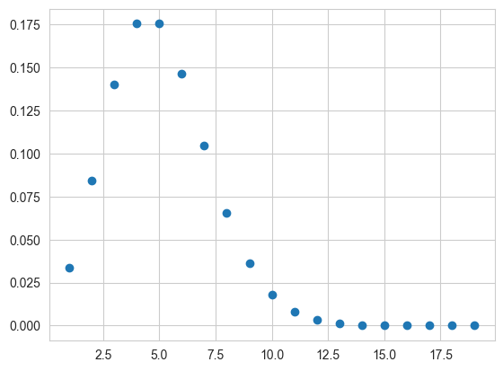
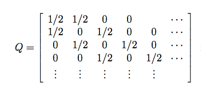
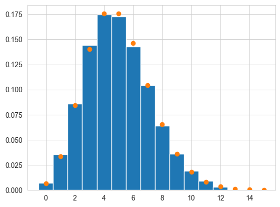

%matplotlib inline
import numpy as np
from scipy import stats
from scipy.stats import norm
import matplotlib.pyplot as plt
import seaborn as sns
sns.set_style("whitegrid")Discrete MCMC
Metropolis sampling from discrete distributions using proposal matrices.
mcmc
sampling
Demonstrates how to use Metropolis MCMC to sample from discrete distributions. Shows that MCMC handles discrete state spaces using proposal matrices that satisfy detailed balance, applied to sampling from a Poisson distribution.
In simulated annealing, we carried out combinatorical oprimization by sampling from a state space where each state was a vector of baseball simulation features.
Since Metropolis MCMC is the same algorithm, it should be clear that its possible to simulate discrete possibilities in MCMC as long as you choose proposals which satisfy detailed balance.
As an example, consider simulating a poisson distribution. Since its discrete, the proposal wont be a continuous \(q(x,y)\) (the proposal probability to go from y to x), but rather a matrix indexed by a variable that corresponds to (indexes) the various states that can be obtained.
def metropolis(p, qdraw, nsamp, xinit):
samples=np.empty(nsamp)
x_prev = xinit
accepted=0
for i in range(nsamp):
x_star = qdraw(x_prev)
p_star = p(x_star)
p_prev = p(x_prev)
pdfratio = p_star/p_prev
if np.random.uniform() < min(1, pdfratio):
samples[i] = x_star
x_prev = x_star
accepted+=1
else:#we always get a sample
samples[i]= x_prev
return samples, acceptedExample: Sampling a Poisson
The poisson pmf is:
\[p(k) = e^{-\mu}\frac{\mu^k}{k!}.\]
from scipy.stats import poisson
xxx= np.arange(1,20,1)
plt.plot(xxx, poisson.pmf(xxx, mu=5), 'o'); 
To sample from this distribution, we must create a proposal matrix which allows us to go from any integer output to any other in a finite number of steps. This matrix must be symmetric, since we wish to use Metropolis.
A simple such matrix, which is although a bit slow, would be one which has immediate off-diagonal elements (from Stats 580 at Iowa state..)

def prop_pdf(ito, ifrom):
if ito == ifrom - 1:
return 0.5
elif ito == ifrom + 1:
return 0.5
elif ito == ifrom and ito == 0:#needed to make first row sum to 1
return 0.5
else:
return 0def prop_draw(ifrom):
u = np.random.uniform()
if ifrom !=0:
if u < 1/2:
ito = ifrom -1
else:
ito = ifrom + 1
else:
if u < 1/2:
ito=0
else:
ito=1
return itorv = poisson(5)
samps, acc = metropolis(rv.pmf, prop_draw, 50000, 1)acc41228xxx = np.arange(0,samps.max())
plt.hist(samps, bins=xxx, density=True, align='left');
plt.plot(xxx, rv.pmf(xxx),'o');